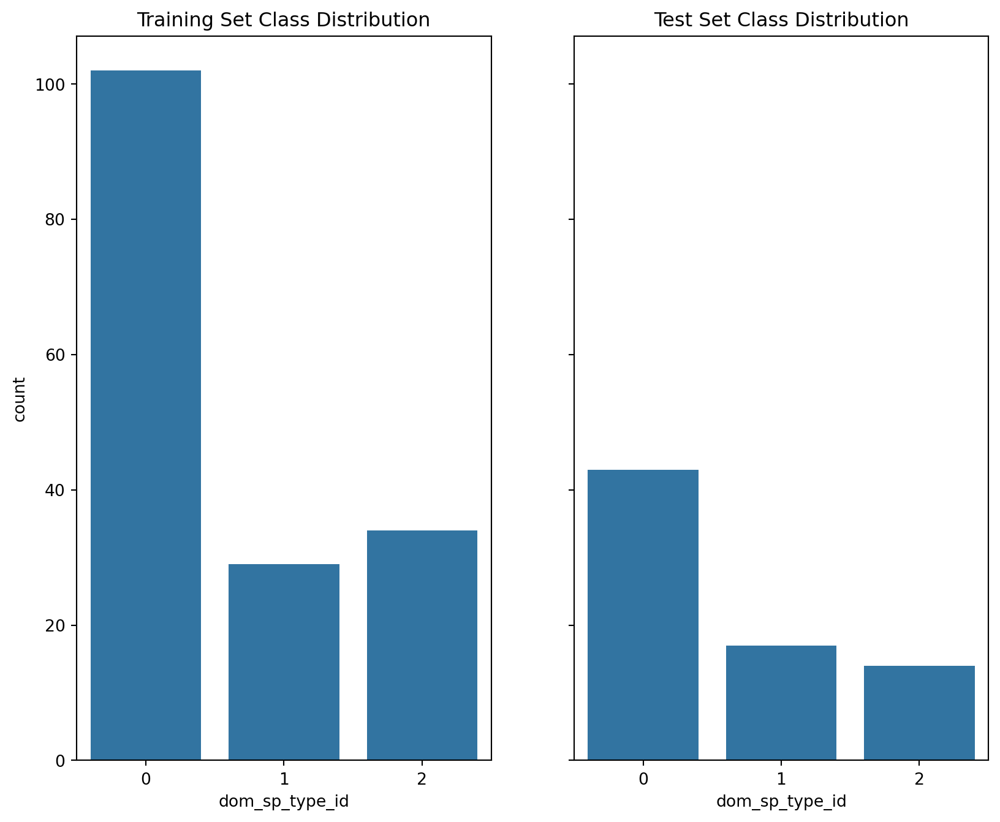
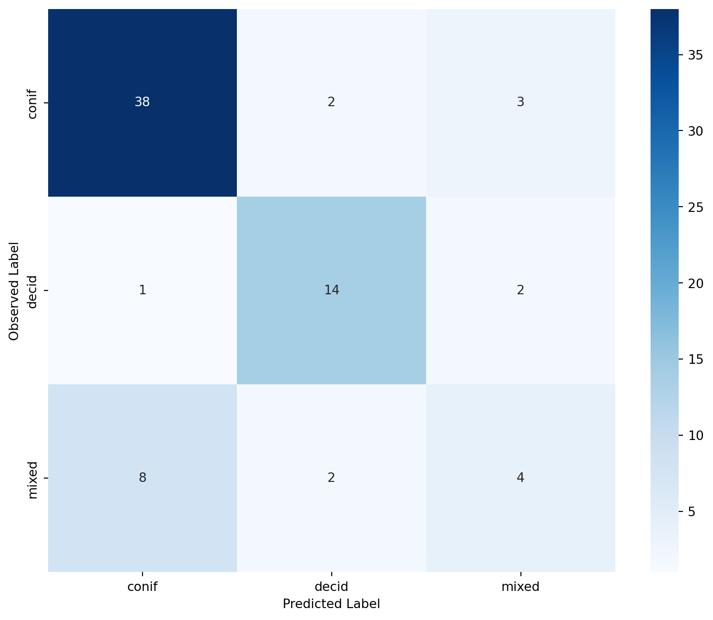
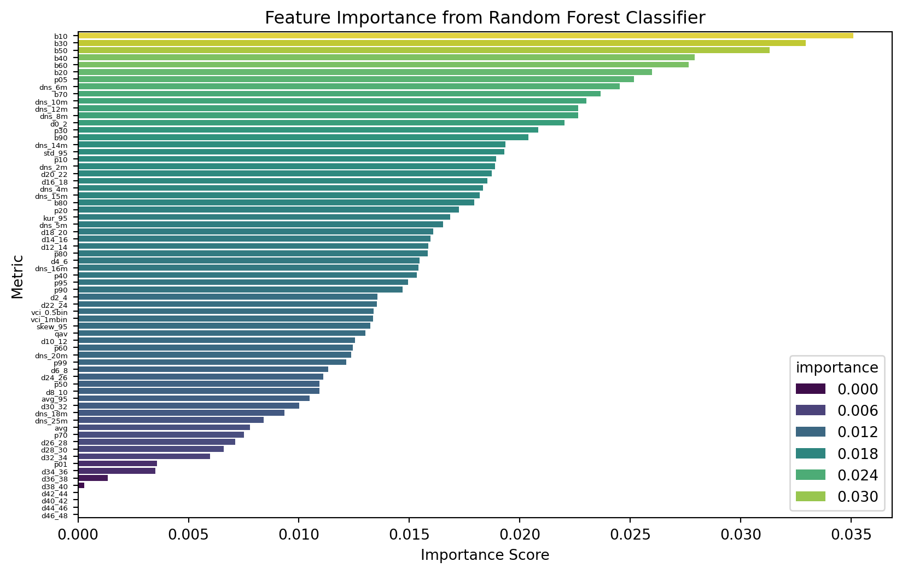
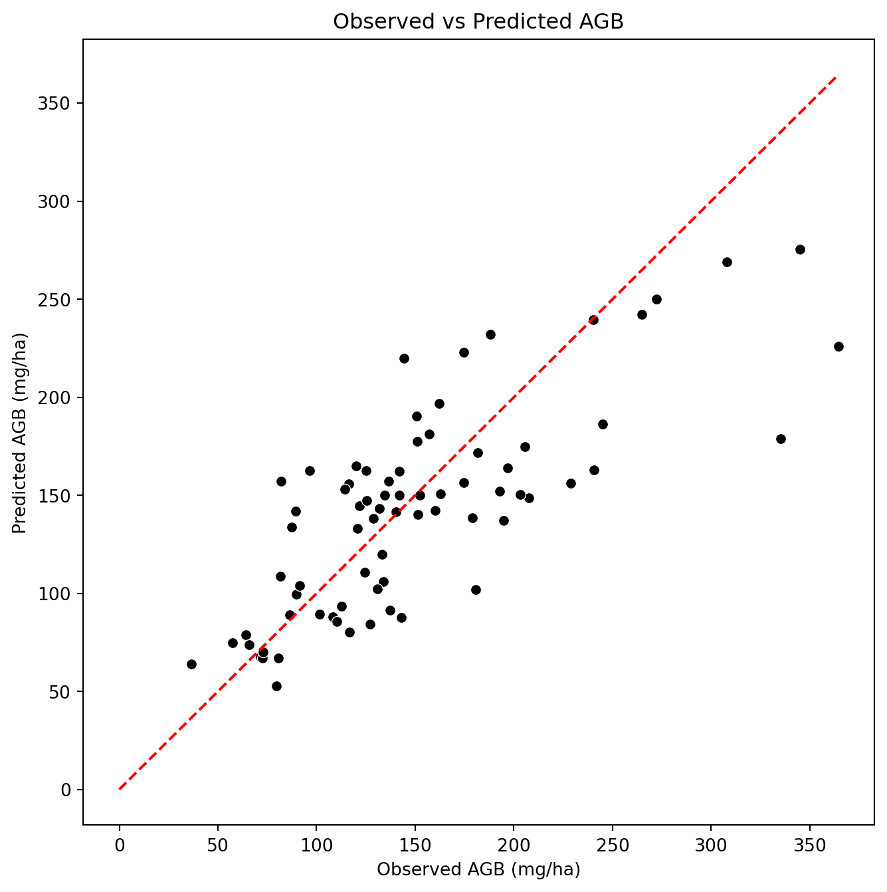
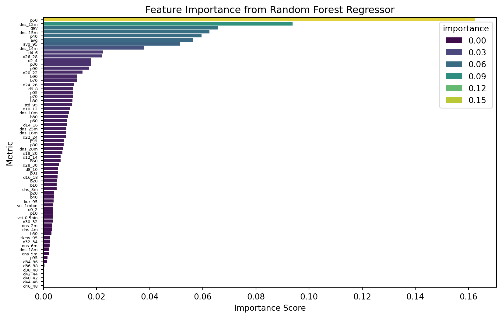

import pandas as pd
import seaborn as sns
import numpy as np
import matplotlib.pyplot as plt
import geopandas as gpd
from sklearn.ensemble import RandomForestClassifier, RandomForestRegressor
from sklearn.metrics import accuracy_score, cohen_kappa_score, confusion_matrix, mean_squared_error, r2_score
import rioxarray as rioRandom Forest
Load data
# Load plot locations
PLOT_COORDS_FPATH = 'data/SPL2018_EFI_ground_plots/SPL2018_EFI_ground_plots/PRF_SPL2018_EFI_plots_pts_wgs84.shp'
LABELS_FPATH = 'data/labels.csv'
ALS_METRICS_FPATH = r'data/als_metrics.tif'
plots_gdf = gpd.read_file(PLOT_COORDS_FPATH).rename(columns={"Plot": "plot_id"})
labels_df = pd.read_csv(LABELS_FPATH)
labels_df| plot_id | dom_sp_type | perc_decid | total_agb_mg_ha | split | |
|---|---|---|---|---|---|
| 0 | PRF013 | conif | 0.000000 | 42.263648 | train |
| 1 | PRF090 | mixed | 52.285188 | 127.743892 | train |
| 2 | PRF015 | conif | 5.186690 | 172.347008 | train |
| 3 | PRF146 | conif | 3.228891 | 174.069178 | train |
| 4 | PRF208R | conif | 0.000000 | 13.298206 | train |
| ... | ... | ... | ... | ... | ... |
| 244 | PRF212 | conif | 26.719682 | 141.950651 | test |
| 245 | PRF049 | mixed | 66.054144 | 36.550006 | test |
| 246 | PRF161 | decid | 98.688073 | 131.689708 | test |
| 247 | PRF199 | conif | 5.880717 | 133.009047 | test |
| 248 | PRF072 | mixed | 54.907966 | 65.969887 | test |
249 rows × 5 columns
Extract ALS Metrics
als_metrics = rio.open_rasterio(ALS_METRICS_FPATH)
als_metrics<xarray.DataArray (band: 67, y: 366, x: 746)> Size: 73MB
[18293412 values with dtype=float32]
Coordinates:
* band (band) int64 536B 1 2 3 4 5 6 7 8 9 ... 60 61 62 63 64 65 66 67
* y (y) float64 3kB 5.099e+06 5.099e+06 ... 5.09e+06 5.09e+06
* x (x) float64 6kB 2.974e+05 2.974e+05 ... 3.16e+05 3.16e+05
spatial_ref int64 8B 0
Attributes:
AREA_OR_POINT: Area
_FillValue: -3.4028235e+38
scale_factor: 1.0
add_offset: 0.0
long_name: ('avg_95', 'avg', 'b10', 'b20', 'b30', 'b40', 'b50', 'b60...Ensure that raster and plot coordinates are in the same CRS.
assert plots_gdf.crs == als_metrics.rio.crs, "CRS mismatch between plots and raster data."Convert ALS metric names from a tuple to a list for later use.
als_metrics_nms = list(als_metrics.long_name)plot_coords = [(geom.x, geom.y) for geom in plots_gdf.geometry]
for i, metric in enumerate(als_metrics_nms):
print(f"Extracting metric: {metric}")
metric_ras_i = als_metrics[i]
plots_gdf[metric] = [float(metric_ras_i.sel(x=c[0], y=c[1], method="nearest").values) for c in plot_coords]Extracting metric: avg_95
Extracting metric: avg
Extracting metric: b10
Extracting metric: b20
Extracting metric: b30
Extracting metric: b40
Extracting metric: b50
Extracting metric: b60
Extracting metric: b70
Extracting metric: b80
Extracting metric: b90
Extracting metric: dns_10m
Extracting metric: dns_12m
Extracting metric: dns_14m
Extracting metric: dns_15m
Extracting metric: dns_16m
Extracting metric: dns_18m
Extracting metric: dns_20m
Extracting metric: dns_25m
Extracting metric: dns_2m
Extracting metric: dns_4m
Extracting metric: dns_5m
Extracting metric: dns_6m
Extracting metric: dns_8m
Extracting metric: kur_95
Extracting metric: p01
Extracting metric: p05
Extracting metric: p10
Extracting metric: p20
Extracting metric: p30
Extracting metric: p40
Extracting metric: p50
Extracting metric: p60
Extracting metric: p70
Extracting metric: p80
Extracting metric: p90
Extracting metric: p95
Extracting metric: p99
Extracting metric: qav
Extracting metric: skew_95
Extracting metric: d0_2
Extracting metric: d10_12
Extracting metric: d12_14
Extracting metric: d14_16
Extracting metric: d16_18
Extracting metric: d18_20
Extracting metric: d20_22
Extracting metric: d22_24
Extracting metric: d24_26
Extracting metric: d26_28
Extracting metric: d28_30
Extracting metric: d2_4
Extracting metric: d30_32
Extracting metric: d32_34
Extracting metric: d34_36
Extracting metric: d36_38
Extracting metric: d38_40
Extracting metric: d40_42
Extracting metric: d42_44
Extracting metric: d44_46
Extracting metric: d46_48
Extracting metric: d4_6
Extracting metric: d6_8
Extracting metric: d8_10
Extracting metric: std_95
Extracting metric: vci_1mbin
Extracting metric: vci_0.5binLets view the distribution of the 99th height percentile, it looks normal.
ax = plots_gdf['p99'].hist(edgecolor='black', color='blue')
ax.set_xlabel('99th Height Percentile (m)')
ax.set_ylabel('Number of Plots')
plt.show()
Prepare data for RF Modelling
# Join metrics with labels
df = labels_df.merge(pd.DataFrame(plots_gdf), on='plot_id', how='left')
# Check which ALS metric cols have NAs
na_counts = df.isna().sum()
# Print all cols with NAs
for col, na_count in na_counts.items():
if na_count > 0:
print(f"{col}: {na_count} NAs")
# Drop rows with any NAs
df = df.dropna()
dfavg_95: 10 NAs
avg: 10 NAs
b10: 10 NAs
b20: 10 NAs
b30: 10 NAs
b40: 10 NAs
b50: 10 NAs
b60: 10 NAs
b70: 10 NAs
b80: 10 NAs
b90: 10 NAs
dns_10m: 10 NAs
dns_12m: 10 NAs
dns_14m: 10 NAs
dns_15m: 10 NAs
dns_16m: 10 NAs
dns_18m: 10 NAs
dns_20m: 10 NAs
dns_25m: 10 NAs
dns_2m: 10 NAs
dns_4m: 10 NAs
dns_5m: 10 NAs
dns_6m: 10 NAs
dns_8m: 10 NAs
kur_95: 10 NAs
p01: 10 NAs
p05: 10 NAs
p10: 10 NAs
p20: 10 NAs
p30: 10 NAs
p40: 10 NAs
p50: 10 NAs
p60: 10 NAs
p70: 10 NAs
p80: 10 NAs
p90: 10 NAs
p95: 10 NAs
p99: 10 NAs
qav: 10 NAs
skew_95: 10 NAs
d0_2: 10 NAs
d10_12: 10 NAs
d12_14: 10 NAs
d14_16: 10 NAs
d16_18: 10 NAs
d18_20: 10 NAs
d20_22: 10 NAs
d22_24: 10 NAs
d24_26: 10 NAs
d26_28: 10 NAs
d28_30: 10 NAs
d2_4: 10 NAs
d30_32: 10 NAs
d32_34: 10 NAs
d34_36: 10 NAs
d36_38: 10 NAs
d38_40: 10 NAs
d40_42: 10 NAs
d42_44: 10 NAs
d44_46: 10 NAs
d46_48: 10 NAs
d4_6: 10 NAs
d6_8: 10 NAs
d8_10: 10 NAs
std_95: 10 NAs
vci_1mbin: 10 NAs
vci_0.5bin: 10 NAs| plot_id | dom_sp_type | perc_decid | total_agb_mg_ha | split | Date | Northing | Easting | Source | geometry | ... | d40_42 | d42_44 | d44_46 | d46_48 | d4_6 | d6_8 | d8_10 | std_95 | vci_1mbin | vci_0.5bin | |
|---|---|---|---|---|---|---|---|---|---|---|---|---|---|---|---|---|---|---|---|---|---|
| 1 | PRF090 | mixed | 52.285188 | 127.743892 | train | October 24 2018 | 5093451.888 | 301051.062 | Topcon HiperSR PPP | POINT Z (301050.862 5093452.903 0) | ... | 0.0 | 0.0 | 0.0 | 0.0 | 1.4 | 4.2 | 7.3 | 6.69 | 0.84 | 0.84 |
| 2 | PRF015 | conif | 5.186690 | 172.347008 | train | October 3 2018 | 5095722.944 | 308784.843 | Topcon Hiper V PPP | POINT Z (308784.644 5095723.959 0) | ... | 0.0 | 0.0 | 0.0 | 0.0 | 2.8 | 6.0 | 8.5 | 8.08 | 0.91 | 0.91 |
| 4 | PRF208R | conif | 0.000000 | 13.298206 | train | August 7 2018 | 5098426.096 | 312924.933 | Topcon Hiper V PPP | POINT Z (312924.734 5098427.112 0) | ... | 0.0 | 0.0 | 0.0 | 0.0 | 8.3 | 0.0 | 0.0 | 1.17 | 0.86 | 0.88 |
| 5 | PRF324 | conif | 0.117878 | 102.643698 | train | November 23 2018 | 5097473.520 | 313249.330 | Topcon HiperSR PPP | POINT Z (313249.132 5097474.536 0) | ... | 0.0 | 0.0 | 0.0 | 0.0 | 2.5 | 1.8 | 1.4 | 8.84 | 0.73 | 0.76 |
| 6 | PRF211 | conif | 10.348340 | 90.645899 | train | July 12 2018 | 5095450.682 | 308274.089 | Topcon Hiper V PPP | POINT Z (308273.89 5095451.697 0) | ... | 0.0 | 0.0 | 0.0 | 0.0 | 3.4 | 10.9 | 25.0 | 3.42 | 0.83 | 0.86 |
| ... | ... | ... | ... | ... | ... | ... | ... | ... | ... | ... | ... | ... | ... | ... | ... | ... | ... | ... | ... | ... | ... |
| 244 | PRF212 | conif | 26.719682 | 141.950651 | test | November 23 2018 | 5094601.988 | 300072.855 | Topcon HiperSR PPP | POINT Z (300072.654 5094603.003 0) | ... | 0.0 | 0.0 | 0.0 | 0.0 | 1.8 | 2.1 | 2.1 | 7.81 | 0.86 | 0.88 |
| 245 | PRF049 | mixed | 66.054144 | 36.550006 | test | November 23 2018 | 5092004.152 | 304173.914 | Topcon Hiper V PPP | POINT Z (304173.714 5092005.167 0) | ... | 0.0 | 0.0 | 0.0 | 0.0 | 2.9 | 1.0 | 2.2 | 3.26 | 0.56 | 0.64 |
| 246 | PRF161 | decid | 98.688073 | 131.689708 | test | August 13 2018 | 5095552.397 | 311148.042 | Topcon Hiper V PPP | POINT Z (311147.843 5095553.412 0) | ... | 0.0 | 0.0 | 0.0 | 0.0 | 0.4 | 0.9 | 0.7 | 4.88 | 0.77 | 0.81 |
| 247 | PRF199 | conif | 5.880717 | 133.009047 | test | October 9 2018 | 5096083.126 | 300478.721 | Topcon Hiper V PPP | POINT Z (300478.52 5096084.141 0) | ... | 0.0 | 0.0 | 0.0 | 0.0 | 1.6 | 2.2 | 2.2 | 9.71 | 0.72 | 0.73 |
| 248 | PRF072 | mixed | 54.907966 | 65.969887 | test | October 6 2018 | 5094553.397 | 312199.848 | Topcon Hiper V PPP | POINT Z (312199.649 5094554.412 0) | ... | 0.0 | 0.0 | 0.0 | 0.0 | 12.3 | 19.0 | 22.9 | 3.24 | 0.86 | 0.88 |
239 rows × 77 columns
# Assign nummieric IDs to each dominant species
df['dom_sp_type_id'] = df['dom_sp_type'].astype('category').cat.codes
# Create a dictionary mapping species names to their IDs
dom_sp_dict = (df[['dom_sp_type', 'dom_sp_type_id']]
.drop_duplicates()
.sort_values(by='dom_sp_type_id')
.set_index('dom_sp_type_id', drop=True)
.to_dict()['dom_sp_type'])
dom_sp_dict{0: 'conif', 1: 'decid', 2: 'mixed'}train_df = df[df['split'] == 'train'].reset_index(drop=True)
test_df = df[df['split'].isin(('val', 'test'))].reset_index(drop=True)
train_df.columnsIndex(['plot_id', 'dom_sp_type', 'perc_decid', 'total_agb_mg_ha', 'split',
'Date', 'Northing', 'Easting', 'Source', 'geometry', 'avg_95', 'avg',
'b10', 'b20', 'b30', 'b40', 'b50', 'b60', 'b70', 'b80', 'b90',
'dns_10m', 'dns_12m', 'dns_14m', 'dns_15m', 'dns_16m', 'dns_18m',
'dns_20m', 'dns_25m', 'dns_2m', 'dns_4m', 'dns_5m', 'dns_6m', 'dns_8m',
'kur_95', 'p01', 'p05', 'p10', 'p20', 'p30', 'p40', 'p50', 'p60', 'p70',
'p80', 'p90', 'p95', 'p99', 'qav', 'skew_95', 'd0_2', 'd10_12',
'd12_14', 'd14_16', 'd16_18', 'd18_20', 'd20_22', 'd22_24', 'd24_26',
'd26_28', 'd28_30', 'd2_4', 'd30_32', 'd32_34', 'd34_36', 'd36_38',
'd38_40', 'd40_42', 'd42_44', 'd44_46', 'd46_48', 'd4_6', 'd6_8',
'd8_10', 'std_95', 'vci_1mbin', 'vci_0.5bin', 'dom_sp_type_id'],
dtype='object')# Split data into train and test sets (combine val into test since not needed as seperate for RF)
train_df = df[df['split'] == 'train'].reset_index(drop=True)
test_df = df[df['split'].isin(('val', 'test'))].reset_index(drop=True)
# Create histograms showing each dataset class distributions
fig, axes = plt.subplots(1, 2, figsize=(10, 8), sharey=True)
sns.countplot(x='dom_sp_type_id', data=train_df, ax=axes[0])
axes[0].set_title('Training Set Class Distribution')
sns.countplot(x='dom_sp_type_id', data=test_df, ax=axes[1])
axes[1].set_title('Test Set Class Distribution')
plt.show()
Train RF for Dominant Species Type Classification
def plot_feature_importance(rf, als_metrics_nms, title):
importances = rf.feature_importances_
importance_df = pd.DataFrame({'Metric': als_metrics_nms, 'importance': importances
}).sort_values(by='importance', ascending=False)
plt.figure(figsize=(10, 6))
sns.barplot(x='importance', y='Metric', hue='importance', data=importance_df, palette='viridis')
plt.title(title)
plt.yticks(fontsize=5)
plt.xlabel('Importance Score')
plt.show()rf = RandomForestClassifier(n_estimators=100, random_state=25)
rf.fit(train_df[als_metrics_nms], train_df['dom_sp_type_id'])
# Apply the model to the test set
test_df['pred_dom_sp_group_id'] = rf.predict(test_df[als_metrics_nms])
# Calculate accuracy and kappa
accuracy = accuracy_score(test_df['dom_sp_type_id'], test_df['pred_dom_sp_group_id'])
kappa = cohen_kappa_score(test_df['dom_sp_type_id'], test_df['pred_dom_sp_group_id'])
print(f"Overall Accuracy: {accuracy:.2f}")
print(f"Kappa: {kappa:.2f}")
# Class specific accuracies
class_accuracies = {}
for class_id in test_df['dom_sp_type_id'].unique():
class_mask = test_df['dom_sp_type_id'] == class_id
class_accuracy = accuracy_score(test_df.loc[class_mask, 'dom_sp_type_id'],
test_df.loc[class_mask, 'pred_dom_sp_group_id'])
class_accuracies[class_id] = class_accuracy
print(f"Class {class_id} ({dom_sp_dict[class_id]}): Accuracy = {class_accuracy:.2f}")
# Print confusion matrix
conf_matrix = confusion_matrix(test_df['dom_sp_type_id'], test_df['pred_dom_sp_group_id'])
plt.figure(figsize=(10, 8))
sns.heatmap(conf_matrix, annot=True, fmt='d', cmap='Blues',
xticklabels=dom_sp_dict.values(),
yticklabels=dom_sp_dict.values())
plt.xlabel('Predicted Label')
plt.ylabel('Observed Label')
# View metric importance
plot_feature_importance(rf, als_metrics_nms, title='Feature Importance from Random Forest Classifier')Overall Accuracy: 0.76
Kappa: 0.56
Class 0 (conif): Accuracy = 0.88
Class 1 (decid): Accuracy = 0.82
Class 2 (mixed): Accuracy = 0.29

Train RF for AGB estimation
rf = RandomForestRegressor(n_estimators=100, random_state=25)
rf.fit(train_df[als_metrics_nms], train_df['total_agb_mg_ha'])
test_df['pred_agb'] = rf.predict(test_df[als_metrics_nms])
# Calculate regression metrics
r2 = r2_score(test_df['total_agb_mg_ha'], test_df['pred_agb'])
mse = mean_squared_error(test_df['total_agb_mg_ha'], test_df['pred_agb'])
rmse = np.sqrt(mse)
bias = np.mean(test_df['pred_agb'] - test_df['total_agb_mg_ha'])
print(f"R²: {r2:.2f}")
print(f"RMSE: {rmse:.2f} mg/ha")
print(f"Bias: {bias:.2f} mg/ha")
# Plot observed vs predicted AGB
plt.figure(figsize=(8, 8))
sns.scatterplot(x='total_agb_mg_ha', y='pred_agb', data=test_df, color='black')
plt.plot([0, test_df['total_agb_mg_ha'].max()], [0, test_df['total_agb_mg_ha'].max()], color='red', linestyle='--')
plt.xlabel('Observed AGB (mg/ha)')
plt.ylabel('Predicted AGB (mg/ha)')
plt.title('Observed vs Predicted AGB')
plt.show()
plot_feature_importance(rf, als_metrics_nms, title='Feature Importance from Random Forest Regressor')R²: 0.58
RMSE: 43.62 mg/ha
Bias: -7.55 mg/ha
